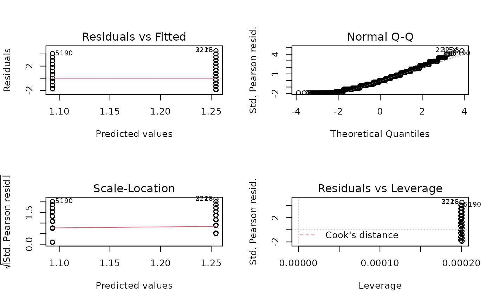
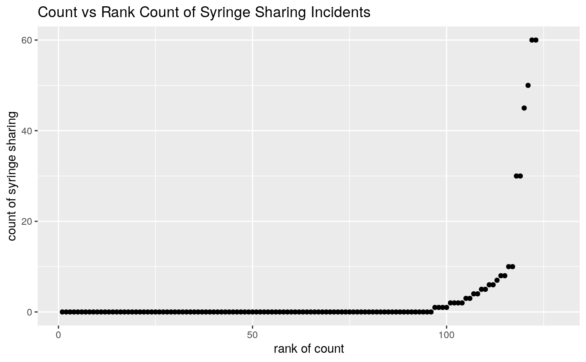
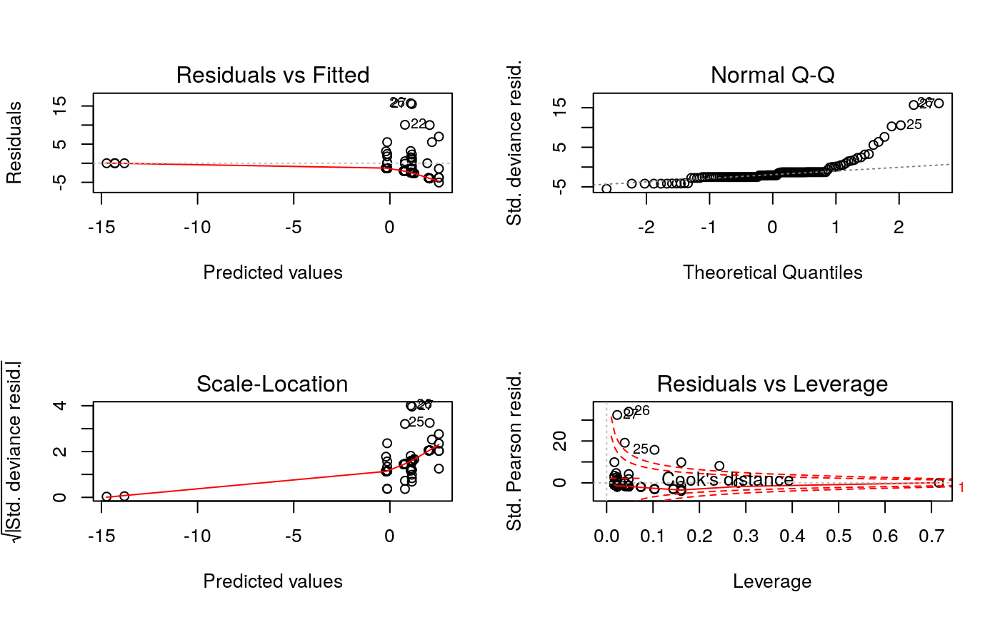

vignettes/session_lab.Rmd
session_lab.RmdLearning objectives
Exercises
simdat <- data.frame(race=sample(c("white", "non-white"), size=10000, replace=TRUE)) simdat$race <- factor(simdat$race, levels=c("white", "non-white")) simdat$y <- rpois(10000, lambda=ifelse(simdat$race=="white", exp(3.5), exp(3)))
##
## Call:
## glm(formula = y ~ race, family = poisson("log"), data = simdat)
##
## Deviance Residuals:
## Min 1Q Median 3Q Max
## -3.7537 -0.7257 -0.0402 0.6677 3.6210
##
## Coefficients:
## Estimate Std. Error z value Pr(>|z|)
## (Intercept) 3.499100 0.002463 1420.9 <2e-16 ***
## racenon-white -0.494397 0.003993 -123.8 <2e-16 ***
## ---
## Signif. codes: 0 '***' 0.001 '**' 0.01 '*' 0.05 '.' 0.1 ' ' 1
##
## (Dispersion parameter for poisson family taken to be 1)
##
## Null deviance: 25873 on 9999 degrees of freedom
## Residual deviance: 10079 on 9998 degrees of freedom
## AIC: 60834
##
## Number of Fisher Scoring iterations: 4The critical threshold for rejection at p=0.05 is:
qchisq(0.95, df=1)
## [1] 3.841459So we reject \(H_0\)
Total residual deviance is \(\chi^2\) distributed if the model is correctly specified + What is the critical value for rejecting \(H_0\) at \(p < 0.05\) with a \(\chi^2\) distribution of 9998 degrees of freedom?
qchisq(0.95, df=9998)
## [1] 10231.73Here total residual deviance is 10111, so we do not exceed the threshold and do not reject \(H_0\) that the model is correctly specified.

## Min. 1st Qu. Median Mean 3rd Qu. Max. NA's
## 0.000 0.000 0.000 2.976 0.000 60.000 5var(needledat$shared_syr, na.rm=TRUE)
## [1] 106.5978Create a table of the risky drug use behavior dataset
Plots of Risky Drug Use Behavior
library(ggplot2) ggplot(needledat, aes(shared_syr)) + geom_histogram() + labs(title = "Counts of Syringe Sharing Incidents Per Person") + xlab("Number of Incidents") + ylab("Number of people with that count")
## `stat_bin()` using `bins = 30`. Pick better value with `binwidth`.## Warning: Removed 5 rows containing non-finite values (stat_bin).library(dplyr)
##
## Attaching package: 'dplyr'## The following objects are masked from 'package:stats':
##
## filter, lag## The following objects are masked from 'package:base':
##
## intersect, setdiff, setequal, unionmutate(needledat, rnk = rank(shared_syr, ties.method = "first")) %>% ggplot(aes(x=rnk, y=shared_syr)) + geom_point() + labs(title = "Count vs Rank Count of Syringe Sharing Incidents") + xlab("rank of count") + ylab("count of syringe sharing")
## Warning: Removed 5 rows containing missing values (geom_point).
##
## Call:
## glm(formula = shared_syr ~ sex + ethn + homeless, family = poisson(link = "log"),
## data = needledat)
##
## Deviance Residuals:
## Min 1Q Median 3Q Max
## -5.057 -2.506 -2.030 -1.279 15.721
##
## Coefficients:
## Estimate Std. Error z value Pr(>|z|)
## (Intercept) 0.72332 0.14462 5.002 5.69e-07 ***
## sexM -0.92480 0.12133 -7.622 2.50e-14 ***
## sexTrans -15.08655 773.78384 -0.019 0.9844
## ethnFilipino -14.52887 510.68253 -0.028 0.9773
## ethnHispanic 1.46454 0.16004 9.151 < 2e-16 ***
## ethnIndian -14.10111 773.78385 -0.018 0.9855
## ethnIndian & White -15.02591 773.78384 -0.019 0.9845
## ethnWhite 0.06064 0.13348 0.454 0.6496
## ethnWhite & Hispa 0.86195 0.39872 2.162 0.0306 *
## homelessyes 1.28543 0.12664 10.150 < 2e-16 ***
## ---
## Signif. codes: 0 '***' 0.001 '**' 0.01 '*' 0.05 '.' 0.1 ' ' 1
##
## (Dispersion parameter for poisson family taken to be 1)
##
## Null deviance: 1621.9 on 120 degrees of freedom
## Residual deviance: 1364.8 on 111 degrees of freedom
## (7 observations deleted due to missingness)
## AIC: 1483.8
##
## Number of Fisher Scoring iterations: 12